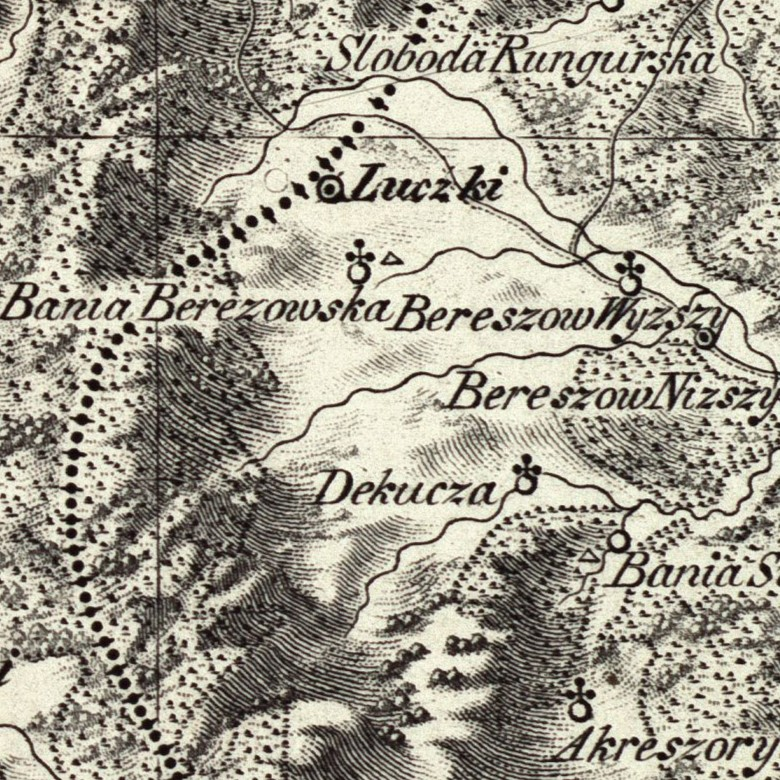
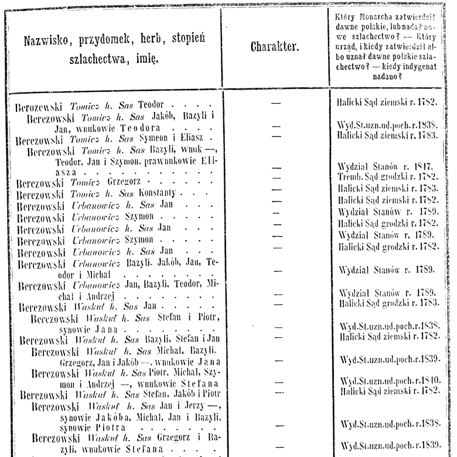
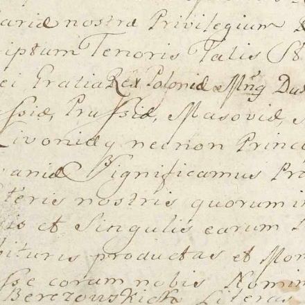
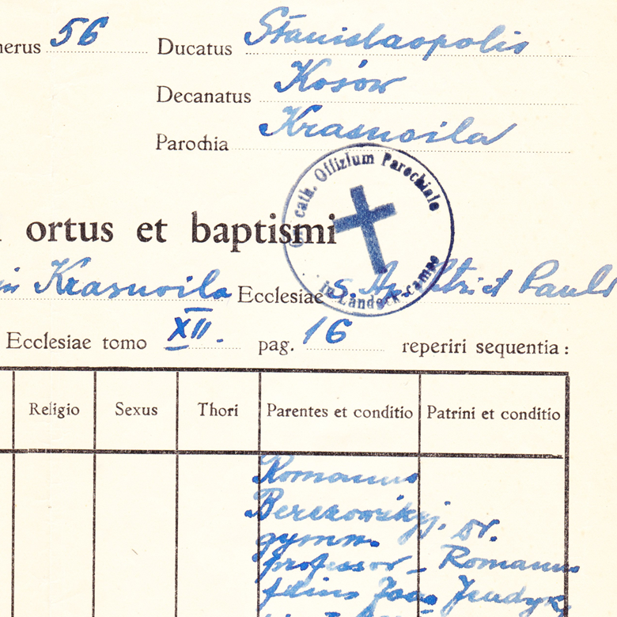

The Berezowski family
Originating from the village Bereziv of the present-day Ivano-Frankivsk region of Ukraine, Berezowski for centuries were knights, priests, farmers, and salt traders. Despite their noble status, the vast majority of their households did not own much land nor they had serfs. Rapidly growing population, military raids and political persecution forced many of them to relocate from their home village to places nearby and far abroad, settling in the USA and Canada as early as the 1890s. By that time, many of them were known not as Berezowski but other surnames - Arsenicz, Bilawicz, Bodrug, Dimidowicz, Droniak, Ficzyc, Genik, Holdisz, Karpowicz, Kosowczyc, Kuzycz, Lazarowicz, Malkowich, Negrycz, Popowicz, Romanczyc, Szymczyc, Telepan, Tomicz, Urbanowicz, Waskul, Zdeczuk - names given to various branches of the big family tree.


As one of the most numerous noble families in XV - XIX centuries, the example of Berezowski family history showcases the high level of cultural, legal and economic development of Ukrainian society of the time. Ruined by russian and soviet imperialism, this rich history was carefully buried to assert imperial supremacy, obedience and cultural assimilation with russians. Unveiling this Ukrainian past from a family history context gives us not only names of our ancestors, but a deeper understanding of the life, environment, and politics of the epoch - a crucial context of present-day events, including the russian invasion of Ukraine.
Research
Our research currently focuses on the family branches who emigrated from their home village Bereziv during XVIII and XIX centuries. By reviewing the metrical books and various other sources, we compiled a large number of unconnected genealogies from hundreds of towns and villages across western Ukraine - including many families who ended up in Canada and the USA.
To complement the paper-based genealogy, we facilitate DNA testing for persons of interest. For test takers of interest who are unable to fund their DNA test, we offer discounted or free DNA tests.
The family trees we compiled will be published on this website at a later time - but in the meantime, feel free to contact us in case you have questions about Berezowski or related family names in your family tree.


Archive
We are committed to the preservation of private family archives of Berezowski and related families for future generations. During a number of our field trips, a large set of documents of a number of families was digitized. These include various legal documents, private correspondence, photos, literature or drafts, study materials, etc. Among those, we have digitized family documents of some famous Ukrainians - musician Vasyl Barwinski, painter Yaroslava Muzyka, publicists Rostyslav Jendyk, and lesser-known creators - Roman Berezowski and Mychailo Litwinowicz.
The archival descriptions of the digitized materials are currently work-in-progress. Once ready, they will be published on this website.
If you have family history materials about Berezowski or related families and would like us to consider them for our digitization program, please contact us at info@berezowski-history.org
Donate
Your gifts to the Berezowski Family History Institute support our research initiatives. We are grateful for any amount of your help!
There are several ways to make a donation:
Cheque / Money Order
Payable to Berezowski Family History Institute
Mail to:
Berezowski Family History Institute, 2111-329 Howe St, Vancouver, BC V6C 3N2, Canada
e-Transfer
Send funds to:
donate@berezowski-history.org
Other ways to donate
We accept wire and bank transfers (SWIFT, ACH, EFT, IBAN), cryptocurrencies, securities, in-kind donations, etc.
Please feel free to contact us at donate@berezowski-history.org
Frequently Asked Questions
I have Berezowski or another family name of interest in my family tree - how can you help me?
Please contact us at info@berezowski-history.org with the details on your ancestors. Our volunteers will look it up among our records and will conduct limited research from other available sources.
Can I order genealogical research from you?
Unfortunately, we do not provide any services for a fee. For those with a family name of our interest among ancestors, we will conduct limited research. For those with Ukrainian origins, we can refer you to a Ukrainian genealogist who specializes on a certain geographical area.
Contact Us
Should you have any questions, please feel free to contact us at info@berezowski-history.org or by mail:
BEREZOWSKI FAMILY HISTORY INSTITUTE 2111-329 HOWE ST VANCOUVER BC V6C 3N2 CANADA